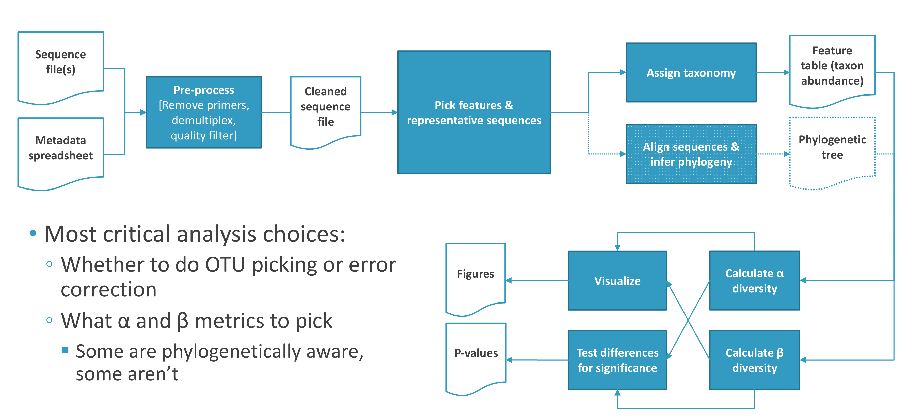
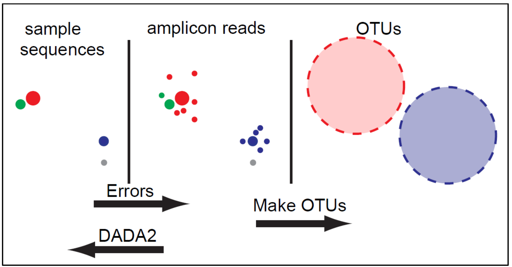

Chapter 3 Introduction to QIIME2

Since January 2018, the QIIME project released the QIIME2 (qiime2.org, Bolyen et al., 2018) pipeline to analyse amplicon sequencing data. The QIIME1 scripts, in its latest release QIIME1.9.1, are still available (and their methods are still valid) however the suggestion is to use QIIME2, as QIIME1 is no longer supported. In the following practical we will use the QIIME2 released on January 2019 (given the active development on the tool this may not be the most recent release at the time of this workshop).
To install QIIME2, please refer to its instruction page: https://docs.qiime2.org/2020.11/install/
3.1 Artifacts

The QIIME2 pipeline produces and uses ‘artifact’ files, these contain data and metadata and may be of two types: result or visualization.
- Result files (.qza): This file type contains the results of a method, which accepts other ‘artifacts’ and specific settings as input, in order to apply a procedure creating a new artifact (e.g. loading sequences, error correction, alpha- or beta-diversity).
- Visualisation files (.qzv): This file type contains the results of a specific procedure to obtain an object that can only be used to visualize the results. These files can be loaded into the following web-site https://view.qiime2.org, where the interactive visualisations can be viewed. Please note that only chrome and Firefox are supported by this QIIME2 website.
The final resulting table may be exported by the ‘download’ option once the data are loaded into the above website as well as by a specific exporting procedure.
3.2 Workflow

The steps for the analysis are listed below, mainly taken from https://docs.qiime2.org/2019.1/tutorials/. The square brackets show the tool used for the specific step in this practical (all performed within the QIIME2 pipeline).
 Representation of the step proposed for the analysis (http://compbio.ucsd.edu/wp-content/uploads/2016/10/20170712_microbiome_16s_tutorial_non-interactive.pdf)
- Prepare the sequence dataset
- Remove PCR primers [Cutadapt – QIIME2]
- Amplicon Sequence Variants identification [DADA2 – QIIME2]
- Assign a taxonomic classification to each AVS [sk-learn – QIIME2]
- Train naïve-classifier for assignment [QIIME2]
- Taxonomy assignment of the identified ASVs [QIIME2]
- Make a phylogeny tree for the ASVs [QIIME2]
- Alignment of the identified ASV [QIIME2]
- Masking low quality alignment [QIIME2]
- Creating the un-rooted phylogenetic tree [QIIME2]
- Creating the rooted phylogenetic tree [QIIME2]
- Summarise the taxonomy data for each sample and plot results [QIIME2]
- Estimate and plot alpha diversity [QIIME2]
- Estimate and plot beta diversity (if >1 sample) [QIIME2]
- Differential abundance analysis (if >1 sample) [QIIME2]
3.3 Prepare the sequence dataset

The read set you will be using in this tutorial will be a raw dataset. It still includes low quality sequences, Illumina sequencing adapters as well as PCR primers. Before proceeding with the analysis, it is a good strategy to investigate the quality of the sequences.
The PCR primers used for the amplification may have degenerate positions (required for annealing to the large variety of species in the samples). This adds ‘random’ variability outside the target region. These unknown sequences may affect the subsequent taxonomy identification as well as the error-correction step. We will use Cutadapt to remove the PCR primers before any other step.
If the analysis is based on a marker gene different than 16S, other quality trimming may be required. In the case of the ITS marker gene, the common practice is to trim off the conserved regions (SSU, 5.8S or LSU) that may be contained in the final amplicon. The ‘ITSxpress’ software (Rivers et al., 2018) is designed for this specific task and it is available as a QIIME2 plug-in, though it requires specific installation steps because it is not installed with the basic (core) installation process. It could be found among the list of third-party QIIME2 available plug-ins (https://library.qiime2.org/plugins/ ).
3.4 Amplicon Sequence Variants identification
The key element of this type of metagenomic analysis is the identification of the different rRNA variants in the sample.
3.4.1 OTUs

The most used procedure to identify OTUs (Operational Taxonomic Units) is through the clustering of reads into groups that are sufficiently similar to one another. These grouped reads are likely to come from the same rRNA gene, genome or taxa group.
The identified OTUs are a feature of the sequence dataset, heavily dependent on the similarity level used for OTU identification (the most commonly used threshold is 3% dissimilarity/97% similarity to group reads into species OTUS). Therefore, de novo OTUs identified in two different data sets cannot be compared.
There is no single perfect tool for this step; but a few of the most widely used are:
- UCLUST (the default used by QIIME1.9.1)
- VSEARCH
- CD-Hit
- SWARM (if you work with QIIME1.9.1 we recommend using SWARM for this step)
The number of reads in each OTU should reflect the number of copies of the gene in the sample, thus providing a quantitative measure of diversity.
3.4.2 ASVs

There are now many bioinformatics methods to resolve amplicon sequence variants (AVS) from Illumina data. These methods do not impose the arbitrary dissimilarity thresholds that define molecular OTUs. The two methods available in QIIME2 are DADA2 and deblur.
ASV methods infer the biological sequences in the sample prior to the introduction of amplification and sequencing errors, and distinguish sequence variants differing by as little as one nucleotide. The methods use a de novo process in which biological sequences are discriminated from errors on the basis of, in part, the expectation that biological sequences are more likely to be repeatedly observed than error-containing sequences.
Unlike de novo OTUs, ASVs are consistent labels because ASVs represent a biological reality that exists outside of the data being analysed: the DNA sequence of the assayed organism. Thus, ASVs inferred independently from different studies or different samples can be validly compared.
The following picture (http://ju.outofmemory.cn/entry/332219) shows how DADA2 (an ASV method) and OTU processes compare each other. This shows how the canonical creation of OTUs creation by clustering may lead to an overestimation of the size of the OTUs due to the presence of errors, from either PCR or sequencing.

Much of the work involved in analysis of amplicon-based metagenomic data is that of separating true variants from errors introduced by sequencing. These errors include miscalling of nucleotides and the generation of chimeric sequences.
For sequencing purposes, an aliquot of PhiX phage DNA is added to each sample before sequencing, both DADA2 and deblur include a step aimed to exclude any PhiX associated reads. To remove PCR chimeric artefacts, a further filter step is applied by both.
QIIME 2 Authors suggest using DADA2 for read pairs and ‘deblur’ for already paired (stitched/joined) sequences. Please note that it is good practice to remove/trim out sequences containing Ns before the error correction step. It is not suggested to denoise with DADA2 samples from different sequencing lanes, because each lane may introduce different sequencing bias. It is possible to collate the denoised abundance tables and representative sequences afterward, recording the sequencing lane for each sample in a specific metadata column. The ‘deblur’ denoise tool may be used in this case because it should be less sensitive to these possible biases, however it is good practice to keep the lane of origin in the metadata (with the second benefit that ‘deblur’ is also faster than ‘DADA2’).
3.5 Assign a taxonomic classification to each ASV

The sequence of each ASV is compared with the selected database, to identify the most likely taxonomy for each ASV. Unfortunately different parts of the taxonomic identification step may lead to different results for the same ASV.
Different databases may result in different taxonomic classification for the same ASV. The choice of tool used for taxonomic assignment may also impact the results in a similar way. The current version of QIIME2 allows you to select from either the Scikit-learn classifier (a classifier which applies a machine learning approach and therefore needs training before use) or BLAST+ and VSEARCH (for a global alignment approach followed by a last common ancestor search) for this step.
In the practical we will use Scikit-learn (similar to the RDP tool widely used so far). It has been shown that (at least in the case of 16S analysis) taxonomic classification accuracy improves when the classifier is trained with sequences derived from the amplicon region only (Werner et al., 2012).
3.6 Build phylogenetic tree
To include phylogenetic diversity metrics in the diversity analysis, such as UniFrac distance metric, the construction of a phylogenetic tree for the identified AVS previously identified is required. QIIME2 supports MAFFT for the alignment and MASK to mask the alignment sections that are not phylogenetically informative. Unrooted and rooted trees may be created.
For some marker genes it is not possible to build phylogenetic tree (ITS is among these), and it is therefore important to know the properties of the marker in use. Consequently, it is not possible to use any diversity metrics that requires the phylogenetic distance as input.
3.7 Data normalisation
Any further analyses to compare the identified ASVs among sample groups (either alpha- or beta-diversity or differential abundance) should account for the features of the abundance table that can cause erroneous results (Weiss et al., 2017). These features are:
- The microbial community in each sample may be represented by different numbers of sequences (i.e. sequencing depth for each sample).
- The abundance table is usually sparse. That is, most of the ASVs are present only in a few samples and therefore the abundance table contains many ‘0’ values (it is also possible that a particular species is present in a sample but below the detection limit of the methods).
- The total number of sequences obtained reflect the relative abundance of species sequenced rather that the absolute abundance of the species present in the sample (this is commonly referred as ‘compositional nature’ of the data). The relative abundances for the taxa are therefore not independent as in the underlying assumption of many frequently used statistical methods (Gloor et al., 2017).
A normalisation step for the data is required to mitigate these effects and to allow an easier data interpretation. The most used normalisation methods are:
- Normalisation by rarefaction. This is performed by reducing all the samples at the same sequence count, by random sub-sampling of the sequences.
- This method may lead to a potential reduction of the species in your dataset (alpha-diversity) and to the exclusion of any samples not reaching the selected total count per sample.
- DESeq method (borrowed from transcriptomic research)
- Scaling the abundance table by a fixed value or proportion.
- Applying a log-ratio transformation proposed by Aitchinson (1982) in analogy of compositional dataset.
- This is aimed to convert the abundance data into scales on which it is possible to apply conventional statistical procedures.
Methods b-d convert the abundance table in a normalised-abundance table with different strength and pitfalls, therefore they can affect results for beta-diversity and differentially abundant analysis.
These normalisation methods were compared by Weiss and colleagues (2017), but their simulations show that different methods may result in different sensitivity and different false discovery rates.
In this tutorial, following the QIIME2 current tutorial, we will apply the following normalisation methods:
- The ‘rarefaction’ method, in the context of the alpha- and beta-diversity analysis.
- The ‘centered log-ratio transformation’ (clr-transformation) method, in the context of the differential abundance analysis.
3.8 Alpha-diversity
Alpha-diversity is used to measure the diversity within a sample. It is calculated as a value for each sample. Different metrics were developed to calculate diversity in different ways. It combines richness (a measure of the number of species in the sample) and evenness (a measure of the relative abundance of different species that make up the richness of that sample). Alpha diversity measures cannot be compared unless they have been normalised for the difference in sequencing depth between samples. The QIIME2 release we will use supports the following alpha-diversity measures, amongst others: Chao1, Shannon, Simpson, Simpson evenness, Faith’s Phylogenetic Diversity (the only one considering the phylogenetic relationships among the ASVs).
The alpha-diversity metric used for the analysis must be chosen carefully, considering its mathematical definition in relation of the behaviour of the tools used for the previous steps. An important point to consider is whether the chosen metric uses ASVs with only 1 sequence (‘singletons’) to perform some estimation on the dataset or not. The Chao1, as one example for this, uses the number of singletons in the dataset to infer the total number of singletons in the population. However, the DADA2 denoising step excludes ‘singletons’ from the final output, making Chao1 measures not applicable to its resulting abundance tables. A second consideration regards if the phylogenetic tree is available enabling the use of the Faith’s Phylogenetic Diversity metric, for markers such as ITS this metric would not be possible.
3.9 Beta-diversity
Beta-diversity is a term for the comparison of samples to each other. It is also referred as beta-diversity ordination, because it uses one (or more) technique/s to arrange samples along axes on the basis of their composition to highlight the differences. The current QIIME2 release supports only the Principal Coordinates Analysis (PCoA) method to investigate beta-diversity (within the old QIIME1 pipeline you could perform nMDS as well). The starting point of the analysis is a dissimilarity matrix, which is used to perform a Principal Component Analysis (PCA) to reduce the dimension for display purpose. The axes obtained from the PCA analysis are then compared with the categories in the metadata file to identify patterns.
A few of the commonly used beta diversity metrics supported by QIIME2 are:
- Jaccard: A non-phylogeny based method that takes into account only presence/absence of a ASVs to measure the distance between two samples.
- Bray-Curtis: A non-phylogeny based method that takes into account the number of ASVs as well as their abundance while measuring the distance between two samples.
- Un-weighted UniFrac: Uses the presence and absence of ASVs and phylogenies.
- Weighted UniFrac: Uses the abundance information of ASVs and phylogenies.
As discussed for the alpha-diversity, before proceeding with the beta-diversity analysis the raw abundance table for the identified ASVs needs to be normalised, to this QIIME2 suggests using the rarefaction methods, in particular at the same rarefaction threshold used for the alpha diversity.
The choice of the beta-diversity distance metric to use will strongly affect the results, it therefore common practice to compare the results obtained with different metrics. Again, not all the metrics may be applicable to all the marker genes, for example the UniFrac distances could not be easily used in the case of ITS, because ITS sequences are quite difficult to align onto phylogenetic trees.
3.10 Differentially Abundant Analysis
The identification of taxa that are differentially abundant across experimental conditions may be an important result for many types of metagenetics analyses. This step is extremely dependent on the normalization methods used to compare the samples: using different normalisation methods may lead to different results (consequently this is another active area of research).
QIIME2 supports two normalisation methods to investigate differentially abundant taxa across experimental conditions: ANCOM (Mandal et al., 2015) and GNEISS (Morton et al, 2017). Both methods are based on the conversion of the abundance values using the clr-transformation method prior to any comparison. Because the conversion is based on a logarithmic transformation, all the value in the abundance table will be increased by ‘1’ to avoid ‘0’ counts (pseudo-counts). These methods may therefore artificially increase the alpha-diversity for the samples as well as decrease the beta-diversity distances in the dataset. In this analysis we will use the ANCOM method following the current QIIME2 tutorial. This method computes the log-ratio for every possible pair of the identified taxa (using the mean group values for the clr-transformed abundance) and reports how many times the hypothesis “H 0 = X is not differentially abundant” is rejected for each taxa ‘X’. That is the ‘W’ statistics, the higher this value is the more significant the ASV/taxa X is differentially abundant between the tested groups. This test assumes that a large number of ASVs did not change in abundances between groups. If, in the results, more than 25% of the ASVs changes in the examined contrasts, the underlying hypothesis for the ANCOM test may be not fulfilled, and there is the chance that the results may be misleading.
Examples of questions to answer - Are there differences in taxa at various levels of taxonomy? - What are the most abundant ASVs (or species)? - What are the rare ASVs present (either real or still retained sequencing error)? - Where are the rare ASVs present (if not sequencing error)? - ASVs correlation: is there a correlation between ASVs and other attributes of samples, like pH or other environmental conditions?